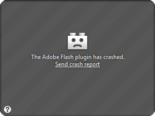
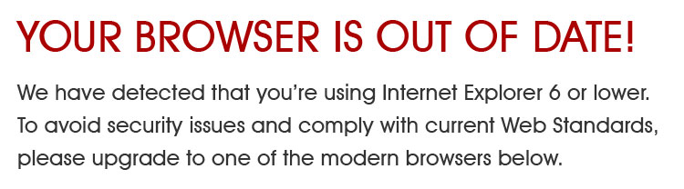
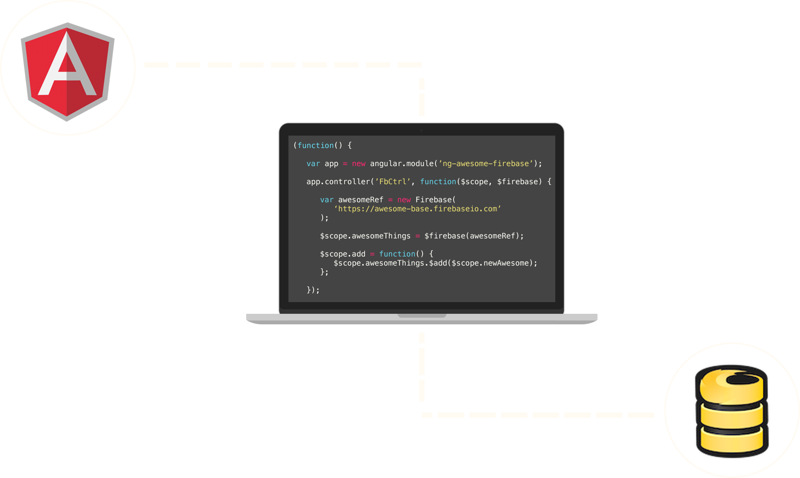

The Evolution of Web Apps
David East / @_davideast
Developer Advocate / @Firebase
Why do we care about the past?
Why do we care about the past?
It governs what we do today
Learn from our mistakes
Learn from the innovations
Break it down into Eras
Review good and bad parts
1 - The beginning
(1989 - 1994)
HTTP, HTML, & Early Browsers
Tim Berners-Lee
Tim Berners-Lee

Built for scientists
The original idea behind the Web was to collaborate and cross reference research documents between a small network of scientists
1989
Tim Berners-Lee proposed the "WorldWideWeb" Project
Not in the original game-plan
Images... seriously, no images
POST request... not even that
Streaming video to 40 million people - (Netflix)
Managing a digital farm - (Farmville)
HTTP & HTML
Simple request, response protocol that served static documents
Open from the beginning
Berners-Lee was a research scientist, to improve HTTP & HTML he asked the early, yet fervent community
1993
Mosaic released, the first widely used browser
1993
CGI (Common Gateway Interface) standard formalized
This gave us the ability to render HTML on the server
1994
Rasmus Lerdorf creates the first version of PHP

Summary: Beginning
Good
The web was created
Emphasis on openness
Bad
Functionality was extremely limited
2 - The Browser Wars
(1994 - 1997)
Standards? I do what I want
1994
Marc Andreessen leaves Mosaic to form Netscape
Netscape Navigator is released in December of 1994
1995
Netscape's success draws Microsoft to the web
Internet Explorer is released
Heavy competition
Implemented features at will
1995
JavaScript is released in Netscape 2
1996
Microsoft released JScript
DHTML
The first emergence of interactivity of an HTML page
:(
var ns6=document.getElementById&&!document.all
var ie=document.all
var customcollect=new Array()
var i=0
function init() {
if (ie){
while (eval("document.all.jiggle"+i)!=null){
customcollect[i]= eval("document.all.jiggle"+i)
i++
}
}
else if (ns6) {
while (document.getElementById("jiggle"+i)!=null){
customcollect[i]= document.getElementById("jiggle"+i)
i++
}
}
}
One language, two flavors
ECMAScript standard would not formalize until 1997
Summary: Browser Wars
Good
JavaScript hit the scene
Bad
JavaScript hit the scene, twice
Competition outweighed standards compliance
3 - Inconsistency era
(1998 - 2005)
More client-side sadness
Cross Browser Compromises
Dynamic content on a small scale is also a cross-platform possibility, but the instantaneous reflowing of modified content, display filters, and transitions that are available in Internet Explorer 4 have no parallels in Navigator 4.
DOM? What DOM?
Since there was no DOM standard, both Netscape and Microsoft had different DOM-like implementations
This was a thing
Standard
var elem = document.getElementById('jiggle');
IE
var elem = document.all.jiggle;
Netscape
var elem = document.layers.jiggle;
1998
DOM Level 1 was standardized by the W3C
Provided a uniform way to access HTML elements
var elem = document.getElementById('jiggle');
Neither Netscape or IE would support DOM Level 1 until 2000
2000
DOM Level 2
Specified events on DOM Elements
Standard
document.addEventListener('click', function(e){
console.log(e); // local event
var elem = event.target; // element the initiated the event
e.stopPropagation(); // stop event bubbling
}, false); // control capture phase
IE
document.attachEvent('onclick', function () {
console.log(window.event); // global event object
var elem = window.event.srcElement; // element the initiated the event
window.event.cancelBubble = true; // // stop event bubbling
}); // no support for capture phase
You're kidding me...
<button onclick="clicked(event);"> Click </button>
function clicked(theEvent) {
var clickEvent, target;
// is it local or global?
clickEvent = window.event ? window.event : theEvent;
// get the target event
if( clickEvent.target ) {
target = clickEvent.target;
} else if( clickEvent.srcElement ) {
target = clickEvent.srcElement;
}
// stop event bubbling
if( clickEvent.stopPropagation ) {
clickEvent.stopPropagation();
} else if ( clickEvent.cancelBubble ) {
clickEvent.cancelBubble = true;
}
}
This would go on for 11 years
Until IE9 implemented DOM Level 2 standards
So IE is the villian?
It may seem easy to dislike IE, but...
AJAX!
XMLHTTP
The Web Outlook Team developed the XMLHTTP wrapper back in 1998
This changed everything
Get partial changes rather then request the entire page
Websites can become web apps
Ready for prime-time?
Wrong
Major differences in event model
There would not be a standard for XHR until 2006
HTML lacked native functionality for video, audio, and animation
Video?
Audio?
Animation?
Summary: Inconsistency Era
Good
AJAX
Bad
Fragmented event model
Reliance on Plugins
4 - HTML5 & jQuery era
(2005 - 2009)
Are you $(document).ready() for this?
2005
John Resig begins the jQuery Project
2006
jQuery 1.0 is released
Inconsistency Amnesia
jQuery made us all forget about the terrible inconsistencies
The way it should have been
Event Handling
$('#btAdd').click(function(e) {
console.log(e); // jQuery event: adheres to W3C standards
e.stopPropagation(); // handle event bubbling
var orginalEvent = e.originalEvent, // access to original event
target = e.target; // dom element that initiated the event
});
AJAX Methods
var ajaxSettings = {
url: 'http://mysite.com/data',
method: 'GET',
success: function(data) {
$('#dataDisplay').text(data);
}
};
$.ajax(ajaxSettings);
2007
Opera proposes the video tag
2008
W3C published the HTML5 working draft
2009
Chrome supports the video tag
Client side power
... but not well organized
$('#omg').promise('.me-you-wont-do-this')
$(function(){
$('select[name=customerId]').on('click', function(){
var $container = $(this).parent()
.parent()
.parent()
.parent()
.parent()
.parent();
});
});
$.get('this/out-of-here')
$(function () {
// what is this even tool-tipping??
$('#btCreate').tooltip();
$('#btCreate').live('click', function (e) {
var $this = $(this),
$parent = $this.parent(), // seriously, we're grabbing the parent?
$container = $('#main-container'); // hope this id doesn't change
var heroWidth = $parent.width(),
containerHeight = $container.outerHeight(true),
//what is this element?
name = $('input[type="text"]#txtAlbumName').val(),
// where is this coming from?
$errorMessage = $('.error-message'),
// Ah yes, adhoc XHR calls
$request = $.post('/Albums/CreateAlbum', { albumName: name });
$request.success(function (result) {
$errorMessage.slideUp();
$parent.css("position", "absolute");
$parent.css("width", heroWidth);
$container.height(containerHeight);
$parent.animate({
"margin-top": '-1000px'
}, 1000, 'easeInExpo', function () {
$parent.remove();
$container.height("auto");
$('#slide-albums').after
($(result))
.hide()
.fadeIn(4000);
});
});
$request.error(function(error) {
$errorMessage
.children()
.remove();
$.each(result, function (key, obj) {
$errorMessage
.append($("")
.text(obj.message))
});
$errorMessage
.hide()
.slideDown();
});
});
HTML5 Support?
IE versions 6-8 held nearly 60% of market share in June of 2009
Summary: HTML5 & jQuery Era
Good
jQuery abstracted browser inconsistencies
HTML5 support began
Bad
Primitive DOM manipulation
Legacy browser use was astonishing
5 - JS Framework Era
(2010 - Present)
Structure & Evergreen Browsers
Server Side responsibilities on the client
Client side templates
{{#items}}
{{#first}}
{{name}}
{{/first}}
{{#link}}
{{name}}
{{/link}}
{{/items}}
2010 - Present
Let's MV* Everything


JSON →
Framework Magic →
Template →
HTML
Legacy browsers?
2012
IE10 released with auto updates
Evergreen Browsers
Competition now means compliance
Prime-time?
Yes!
But the data has to come from somewhere
Adhoc endpoints
http://api.myapp.com/users/
http://api.myapp.com/users/last
http://api.myapp.com/users/email
Summary: JS Framework Era
Good
Increase in client-side power
HTML5 support through Evergreen Browsers
Bad
Repeated code on client and server
Repeated code on client and server
6 - Client only Era
(Present - ?)
API all the things
APIs run powerful apps

But they take a lot of heavy lifting
Is there even time?
UI/UX
Domain logic
We live in the future
There's a Backend as a Service (BaaS) for that
Firebase
A powerful API to store and sync your data in realtime
Handles the heavy lifting

angular.module('myApp', ['firebase'])
// your back-end is right here
.factory('Backend', function() {
return new Firebase('https://east.firebaseio.com/');
})
.controller('TodoCtrl', function($scope, Backend) {
$scope.newTodo = '';
$scope.todos = $firebase(Backend);
$scope.add = function() {
$scope.todos.$add($scope.newTodo);
};
});
Summary
We've come a long way
The web started simple
Browser Wars placed competition over compliance
Features improved, but standards lacked
Summary Cont.
jQuery helped smooth out inconsistencies
Better structure with JS Frameworks
Clients are powerful with Evergreen Browsers
APIs allow us to create powerful cross-platform apps
It's getting better
ajaxpageclass.connect = function (pageurl, divId) {
var page_request = false
var bustcacheparameter = ""
if (window.XMLHttpRequest && !document.all) // if Mozilla, Safari etc (skip IE7, as object is buggy in that browser)
page_request = new XMLHttpRequest()
else if (window.ActiveXObject) { // if IE6 or below
try {
page_request = new ActiveXObject("Msxml2.XMLHTTP")
} catch (e) {
try {
page_request = new ActiveXObject("Microsoft.XMLHTTP")
} catch (e) {}
}
} else
return false
document.getElementById(divId).innerHTML = this.loadstatustext //Display "fetching page message"
page_request.onreadystatechange = function () {
ajaxpageclass.loadpage(page_request, divId)
}
if (this.ajaxbustcache) //if bust caching of external page
bustcacheparameter = (pageurl.indexOf("?") != -1) ? "&" + new Date().getTime() : "?" + new Date().getTime()
page_request.open('GET', pageurl + bustcacheparameter, true)
page_request.send(null)
}
// source: http://www.dynamicdrive.com/dynamicindex17/ajaxpaginate/ajaxpagination.js